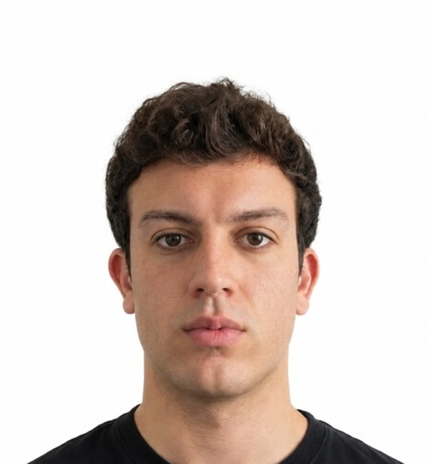

I am a third- and final-year PhD candidate in Data Science at the University of Rome Tor Vergata, supervised by Prof. Fabio Massimo Zanzotto, and a member of Human-Centric ART.
I'm currently a Visiting PhD student at the School of Informatics, University of Edinburgh, under the supervision of Prof. Shay B. Cohen, and a visiting member of the Cohort.
I work at the intersection of NLP and Neuro-Symbolic AI. I study how Large Language Models acquire, represent and use knowledge, and how they can move beyond memorisation towards generalisation and abstract, structured reasoning. My research interests follow these directions:
Code, logic, knowledge graphs and databases (relational or not): can LLMs manipulate symbols abstractly, without leaning on world knowledge and semantic plausibility ?
Multilingual, multimodal and agentic reasoning through new training and reinforcement-learning methods. While designing these methods, I like to draw inspiration from philosophy and cognitive science (e.g. Theory of Mind, Debate, reflection).
Transferring code-generation abilities across programming languages, whether or not they share paradigmatic constructs.
Detection and mitigation, especially for tasks that require complex reasoning rather than surface-level pattern matching.
I believe the future of AI lies in bridging the learning capabilities of LLMs with the principles of Symbolic AI, building systems that are reliable, cost-effective, compositional and interpretable by design.